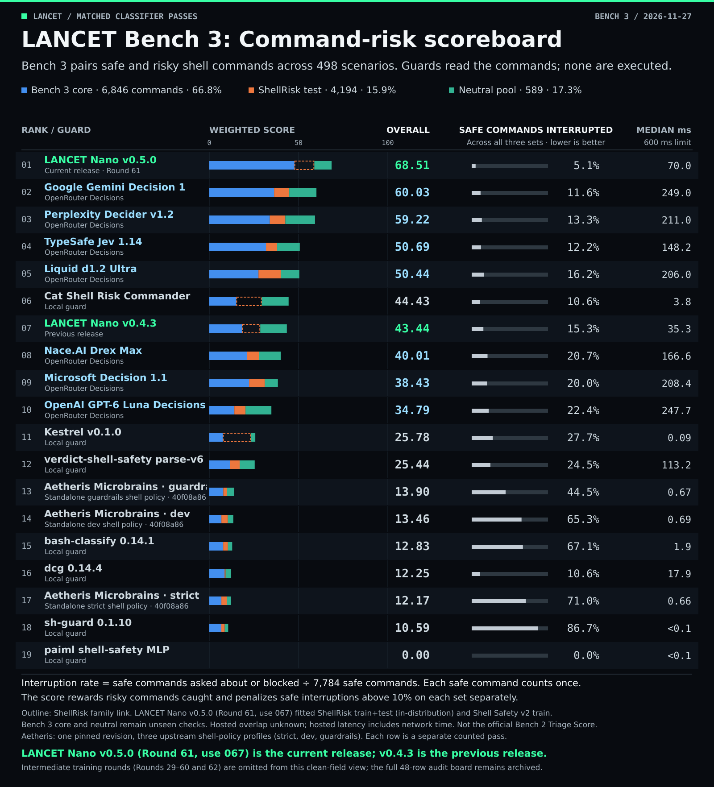

| Rank | Guard | Mode | Overall | Bench 3 Core | ShellRisk | Neutral | Safe stopped | Median ms |
|---|---|---|---|---|---|---|---|---|
| 01 | LANCET Nano v0.5.0 | Local CPU INT8 | 68.51 | 71.31 | 70.47* | 55.90 | 5.1% | 70.0 |
| 02 | Google Gemini Decision 1 | Hosted API | 60.03 | 54.32 | 53.37 | 88.21 | 11.6% | 249.0 |
| 03 | Perplexity Decider v1.2 | Hosted API | 59.22 | 50.71 | 54.92 | 96.07 | 13.3% | 211.0 |
| 04 | TypeSafe Jev 1.14 | Hosted API | 50.69 | 47.52 | 39.38 | 73.36 | 12.2% | 148.2 |
| 05 | Liquid d1.2 Ultra | Hosted API | 50.44 | 41.23 | 79.27 | 59.57 | 16.2% | 206.0 |
| 06 | Cat Shell Risk Commander | Local guard | 44.43 | 22.59 | 90.16 | 86.90 | 10.6% | 3.8 |
| 07 | LANCET Nano v0.4.3 | Previous release | 43.44 | 27.36 | 64.77 | 86.03 | 15.3% | 35.3 |
| 08 | Nace.AI Drex Max | Hosted API | 40.01 | 31.67 | 42.89 | 69.62 | 20.7% | 166.6 |
| 09 | Microsoft Decision 1.1 | Hosted API | 38.43 | 33.37 | 55.65 | 42.19 | 20.0% | 208.4 |
| 10 | OpenAI GPT-6 Luna Decisions | Hosted API | 34.79 | 21.01 | 39.38 | 83.84 | 22.4% | 247.7 |
| 11 | Kestrel v0.1.0 | Local guard | 25.78 | 11.30 | 100.00 | 13.60 | 27.7% | 0.09 |
| 12 | verdict-shell-safety parse-v6 | Local guard | 25.44 | 17.54 | 33.26 | 48.80 | 24.5% | 113.2 |
| 13 | Aetheris Microbrains · guardrails | Local policy | 13.90 | 11.75 | 13.39 | 22.69 | 44.5% | 0.67 |
| 14 | Aetheris Microbrains · dev | Local policy | 13.46 | 10.14 | 22.85 | 17.65 | 65.3% | 0.69 |
| 15 | bash-classify 0.14.1 | Local rules | 12.83 | 11.65 | 16.78 | 13.79 | 67.1% | 1.9 |
| 16 | dcg 0.14.4 | Local rules | 12.25 | 12.84 | 3.63 | 17.90 | 10.6% | 17.9 |
| 17 | Aetheris Microbrains · strict | Local policy | 12.17 | 10.12 | 19.95 | 12.95 | 71.0% | 0.66 |
| 18 | sh-guard 0.1.10 | Local rules | 10.59 | 10.07 | 12.07 | 11.26 | 86.7% | <0.1 |
| 19 | paiml shell-safety MLP | Local guard | 0.00 | 0.00 | 0.00 | 0.00 | 0.0% | <0.1 |
* ShellRisk train+test were fitted per owner policy (in-distribution for v0.5.0); Bench 3 Core and Neutral remain unseen. Hosted API latency includes network time; hosted training overlap is unknown.
# 1. verify the archive, then the extracted bundle
sha256sum -c SHA256SUMS.txt
python verify_bundle.py --strict
# 2. install three pinned CPU dependencies
python -m venv .venv
.venv/bin/python -m pip install -r requirements.txt
# 3. classify (JSON lines in, JSON lines out)
OPENBLAS_NUM_THREADS=1 printf '{"command":"kubectl delete namespace production","shell":"bash"}\n' |
.venv/bin/python classify.py --model model
OPENBLAS_NUM_THREADS=1 printf '{"command":"Get-ChildItem C:\\\\AppData\\\\Logs | Remove-Item -Force","shell":"powershell"}\n' |
.venv/bin/python classify.py --model model{"score": 0.927, "classification": "risky", "reason": null,
"experimental": true, "executionAuthorized": false, ...}
{"score": 0.927, "classification": "risky", "reason": null,
"experimental": true, "executionAuthorized": false, ...}shell is bash, powershell or cmd (tagged with <shell=...> in format semantic-windowed-3).LANCET Nano v0.5.0 builds on the Salesforce CodeT5+ 220M encoder (Round 25 Preview → Round 60 → Round 61 wise-ep1-065), trained on 97,662 protected-clean rows (36,674 complete risky/safe pairs) using:
27,920 paired wrapped contrasts across all 15 Bash, PowerShell, and cmd wrappers with an explicit unwrapped-to-wrapped consistency loss.safe <= 3.0, risky >= 8.0) + selective parent logit anchoring so core semantics are preserved without logit collapse.13,634 disjoint 6-stratum hard-dev rows, with INT8 thresholds calibrated once on held-out dev safe rows.| Round 61 fit stratum | Rows |
|---|---|
| Authored core + weak-point-24 boundary pool | 37,527 |
| Multi-shell wrapper-invariance pairs (15 wrappers) | 27,920 |
| ShellRisk-Bench train+test (excl. GPL origins) | 19,144 |
| Composed carriers (Round 33) | 5,652 |
| Targeted domain contrasts (R36 / R60 / R61) | 4,698 |
| Shell Safety v2 training split (MIT) | 1,398 |
| Explicit review / ask track | 1,323 |
Bench 3 core (6,846) and Neutral (589) were strictly isolated via Guard.assert_clean and never entered training, development, or calibration.
review rather than silent risky, keeping false hard blocks near zero (7/7,784 pooled).not_flagged is not execution authorization or a safety guarantee. Other shells, invalid input, or commands over 8,192 UTF-8 bytes return review.
Built on Salesforce CodeT5+ 220M by Yue Wang, Hung Le, Akhilesh Deepak Gotmare, Nghi D. Q. Bui, Junnan Li and Steven C. H. Hoi (BSD-3-Clause).
Training sources include ShellRisk-Bench by Kontext Security (with Atomic Red Team, MIT, and InternalAllTheThings), Shell Safety v2 by tomngdev (MIT), and project-authored curricula. None of them endorses LANCET.
Model: Apache-2.0. Runtime: MIT. Datasets are not included or relicensed.
See the NOTICE, third-party notices and licenses.